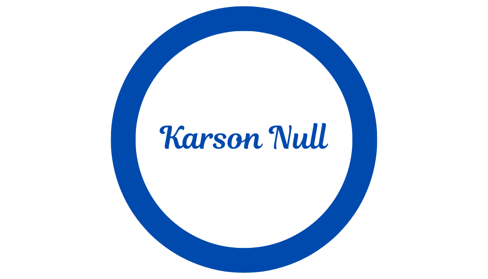
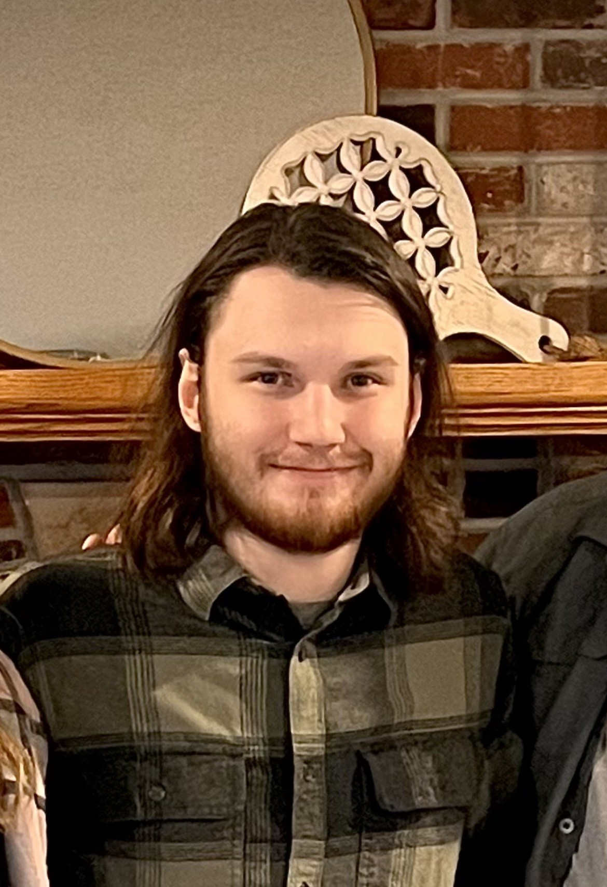

Hello! My name is Karson. I am an IT Major and this summer is my final term at Mizzou, as you can imagine I'm ready to wrap this up and get some sleep, haha. My main hobby is movies, I'm a big movie buff, I'm constantly watching, analyzing, and have even dabbled in making movies to a small degree in the past (My favorite film is Prisoners, and I'm currently watching all of the James Bond movies for the first time). Aside from that I also love video games and reading about history (One of my favorite time periods is the golden age of piracy in the carribean). I'm not set on my long term goals moving forward, graduating has been the focus of all of my energy for so long that now that I'm at the end of the tunnel I'm now unsure of the exact direction to head next, finding that balance of success and personal fulfillment is important to me so I'm not rushing into something that I'm not confident in just yet. But I'm a determined and hard worker and am excited to find that next step for me.
